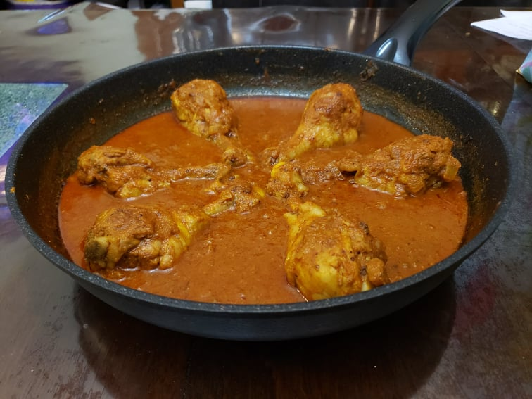

Vindaloo

Ingredients:
Vindaloo Paste:
- 1 1/2 tbsp Coriander seeds
- 1 tsp Cumin
- 10 Black peppercorns
- 2 inches Cinnamon
- 4 Cloves
- 2 Green cardamom pods
- 1/2 tsp Mustard seeds
- 1 tbsp Kashmiri chili powder
- 3 tbsp Goan vinegar, White vinegar, or Red wine vinegar
- 4 tbsp Water
- 10 cloves Garlic (25 grams)
- 1 1/2 inch Ginger, peeled (25 grams)
Other Ingredients:
- 2 lb Chicken drumsticks, bone-in and skin-on
- 1/2 tsp Turmeric
- 3/4 tsp Salt
- 3 tbsp Oil
- 2 Onions, finely diced
- 1 tbsp Goan vinegar, White vinegar, or Red wine vinegar
- 1 tsp Sugar
- 2 Tomatoes, pureed
- 1/2 cup Hot water
- Optional: 1 tbsp Cilantro, chopped
Instructions:
- Place the coriander, cumin, peppercorns, cinnamon, cloves, cardamom, mustard, and chili powder into a spice grinder. Grind until it is a fine powder.
- Place the spice mixture into a food processor with the garlic, ginger, water, and vinegar. Blend until it is a smooth paste.
- Marinate the chicken with the paste, salt, and turmeric. Let marinate overnight.
- Heat oil in a very large pan over medium heat. Place the onions into the pan and sauté until lightly brown, 10-20 minutes.
- Mix in the vinegar and sugar. Sauté until caramelized, about 2-5 more minutes.
- Add in the chicken with its marinade. Sauté for 3-5 minutes.
- Pour in the tomato paste and sauté for another 3-4 minutes.
- Mix in the hot water. Reduce the heat to low and let simmer, covered, for 20-30 minutes or until the meat is cooked through and tender.
- Remove the cover and continue to simmer, stirring often, until the sauce has reached a gravy-like consistency.
- Remove from heat and mix in cilantro if using.